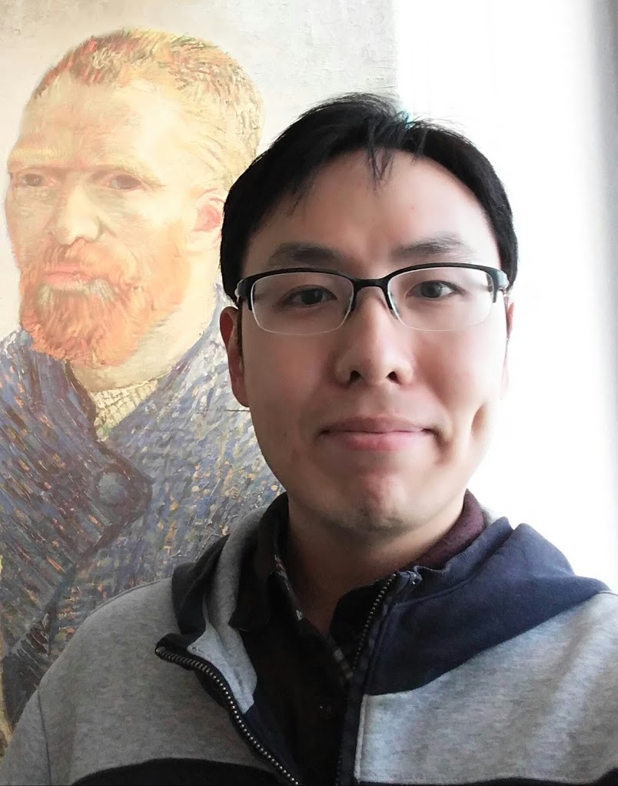

|  |
Ph.D Candidate |
Fine-scale Surface Normal Estimation using a Single NIR Image
Youngjin Yoon, Gyeongmin Choe, Namil Kim, Joon-young Lee and In So Kweon
European Conference on Computer Vision (ECCV 2016).
Paper | Bibtex | Project page
Fine-scale Surface Normal Estimation using a Single NIR Image
Youngjin Yoon, Hae-Gon Jeon, Donggeun Yoo, Joon-Young Lee and In So Kweon
ICCV Workshop - Color and Photometry in Computer Vision (ICCVW 2015).
Paper | Bibtex | Trained network
Human Action Recognition by Attention and Object Network
Bonggeun Sim, Youngjin Yoon, Donggeun Yoo and In So Kweon
22th Korea-Japan Joint Workshop on Frontiers of Computer Vision.
Paper